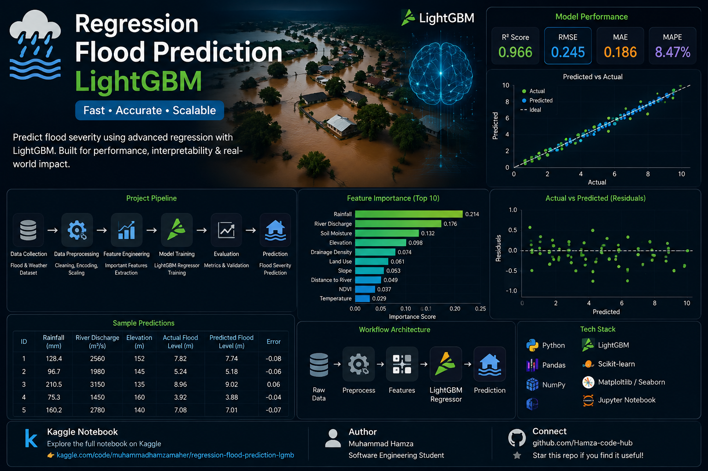

Flood Prediction with LightGBM
An end-to-end machine learning regression pipeline predicting flood-related continuous outcomes from structured environmental data.


Overview
Flood prediction involves environmental, geographical, meteorological and infrastructure-related variables. This project develops a reproducible regression pipeline using LightGBM to learn the relationship between input features and a continuous flood-probability target, covering the complete ML lifecycle from raw data to reusable inference.
Purpose — Why This Project Exists
Flood-prone regions and infrastructure planners need early, data-driven risk estimates rather than reacting after water is already rising. This project demonstrates a reusable, explainable regression pipeline that can be retrained on new regional data to produce a continuous flood-probability estimate, with feature importance that tells decision-makers which environmental factors are actually driving the risk.
Animated Pipeline
Key Features
Benefits
Estimates risk ahead of time instead of reacting once flooding starts.
Retrain on any new region's dataset with the same modular code.
Feature importance shows exactly what's driving each prediction.
Saved joblib pipeline + inference script means quick re-scoring of new data.